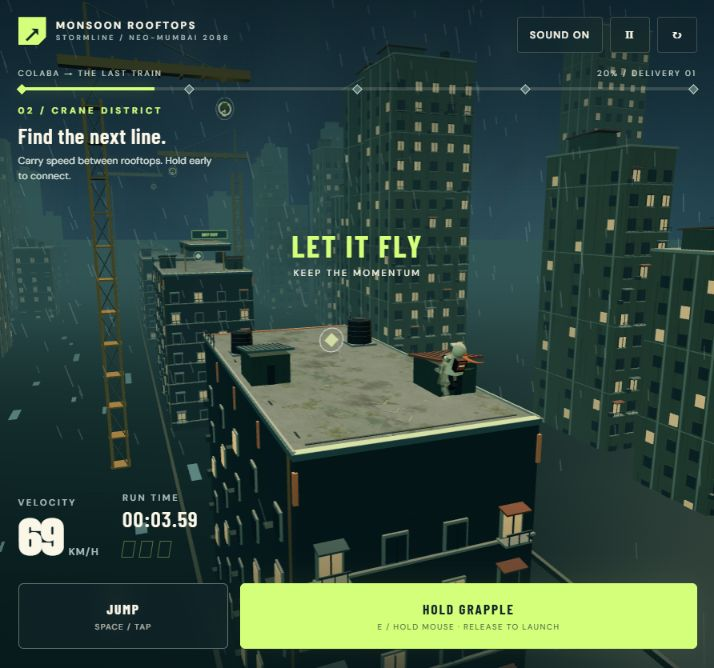

03 / From reference to playable city
The game now builds on this direction with layered apartment facades, balconies, shop signs, roof huts, water tanks and a railway viaduct. The courier has a cream raincoat, orange scarf, backpack and jointed running, jumping and swinging poses. A closer camera makes the movement easier to see.

ACTUAL GAMEPLAY — the generated roof colour map is used in the scene. The architecture and animated character are real-time 3D geometry. The concept above remains a visual reference.
Use it for identity and surface detail.
The concept is a useful reference for buildings, atmosphere and a future cover. The concrete works as a subtle roof material, though large stains become recognisable when repeated too often. The new visual pass carries these ideas into the playable 3D scene.
The roof texture and updated scenery are now the default. The train, landing guides, grapple timing and saved ghost are retained. Compare the earlier geometry using the button above.